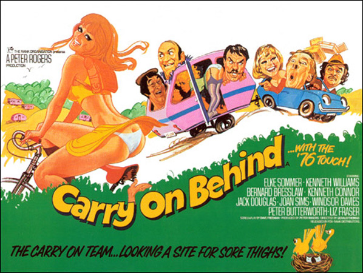
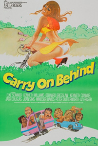

Peter Rogers
Ray Edwards (uncredited)
Frustrated butcher Fred Ramsden (Windsor Davies) and his dim electrician friend Ernie Bragg (Jack Douglas) happily head off for a holiday trip at the Riverside Caravan Site, while their respective wives Sylvia (Liz Fraser) and Vera (Patricia Franklin) look forward to their health farm holiday. Once at the caravan site of Major Leaper (Kenneth Connor), Fred starts making eyes at two young female campers, Carol (Sherrie Hewson) and Sandra (Carol Hawkins). However, as Ernie talks in his sleep and any infidelities are likely to be spoken of in the marital bed after their holiday, Fred is despondent. Professor Roland Crump (Kenneth Williams) teams with Roman expert Anna Vrooshka (Elke Sommer) in an archaeological dig at the site. Arthur Upmore (Bernard Bresslaw) and his wife Linda (Patsy Rowlands) are saddled with her mother Daphne (Joan Sims) and her vulgar mynah bird. Arthur is caught in a compromising position with attractive blonde Norma Baxter (Adrienne Posta) whose husband Joe (Ian Lavender) is lumbered with their giant wolfhound.
After a few pints with the amused pub landlord (David Lodge), Fred and Ernie discover that the caravan site is riddled with excavation holes. Daphne is perturbed by the discovery that her estranged husband Henry Barnes (Peter Butterworth) lives a downtrodden life as the camp's odd-job man, despite having won the pools. Major Leaper is determined to give the place a boost and arranges an evening cabaret for the caravanners, but a mix-up over the phone secures a stripper, Veronica (Jenny Cox), rather than the singer he wanted. Carol and Sandra having hooked up with archaeology students Bob (Brian Osborne) and Clive (Larry Dann), Fred and Ernie pick up Maureen (Diana Darvey) and Sally (Georgina Moon), two beautiful young women from the village. Some wet paint, some glue, heavy rain that causes the tunnels of the dig to collapse, and the arrival of their wives soon bring their planned night of passion to a halt.
Filming dates: 10 March – 18 April 1975.
Interiors: Pinewood Studios, Buckinghamshire.
Exteriors: (1) Pinewood Studios: the Orchard doubled for the caravan site, as it had for the campsite in Carry On Camping. (2) Maidenhead: the town hall doubled for the university seen at the start of the film. It had previously been used for the hospital exteriors in Carry On Doctor and Carry On Again Doctor. (3) Farnham Royal, Buckinghamshire.
Chilly spring filming meant the bare trees, muddy fields and icy breath are all quite visible, although the setting is a summer caravanning holiday. A similar dilemma met the cast and crew in Carry On Camping. The signage in Fred Ramsden's butcher's shop clearly shows that the shop is closing for the Easter holidays, which can occur as early as March.
The new screenwriter Dave Freeman had previously written the film Bless This House which had virtually the same team behind it as many Carry Ons and would go on to write the 1992 revival Carry On Columbus.
The voice of the foul-mouthed mynah bird was provided by the vocal talents of director Gerald Thomas.
The main roles are played by Carry On regulars Kenneth Williams, Bernard Bresslaw, Peter Butterworth, Joan Sims, Kenneth Connor, Jack Douglas and Patsy Rowlands. Newcomers to the series in major roles are Windsor Davies and Elke Sommer. Sims played the role of Rowlands's mother, despite being only eight months older than her on-screen daughter.
This was the last Carry On film for Bernard Bresslaw and Patsy Rowlands. By this time Sid James, Terry Scott, Hattie Jacques and Charles Hawtrey had already made their final Carry On film appearances.
Ian Farrington- "The established team is falling apart now. Charles Hawtrey, Hattie Jacques and Sid James have all gone, while a new generation of actors – mostly from contemporary sitcoms – has been drafted in. The film is a blatant attempt to repeat the success of Carry On Camping, but we’re really in the fag end of the series now. Dave Freeman’s script has a tiresome ‘Is that good enough?’ feel about it. This is limp, boring and witless nonsense."
